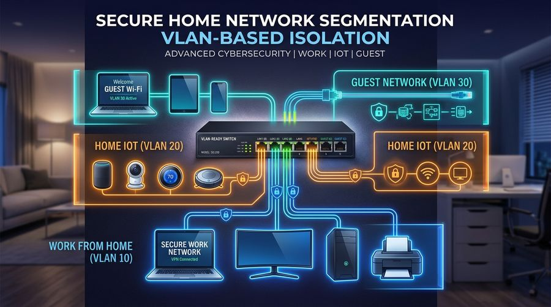
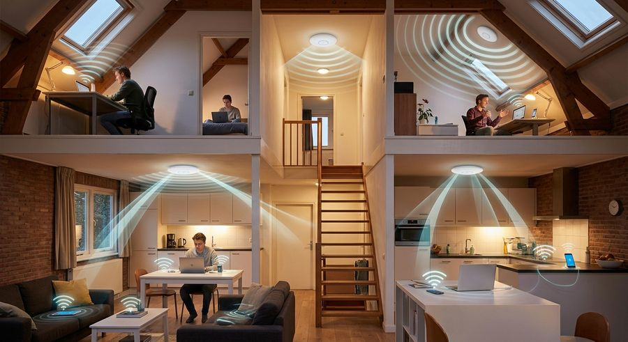
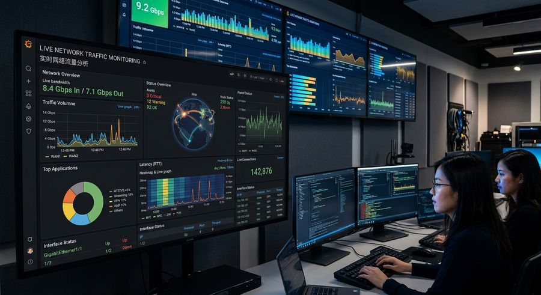
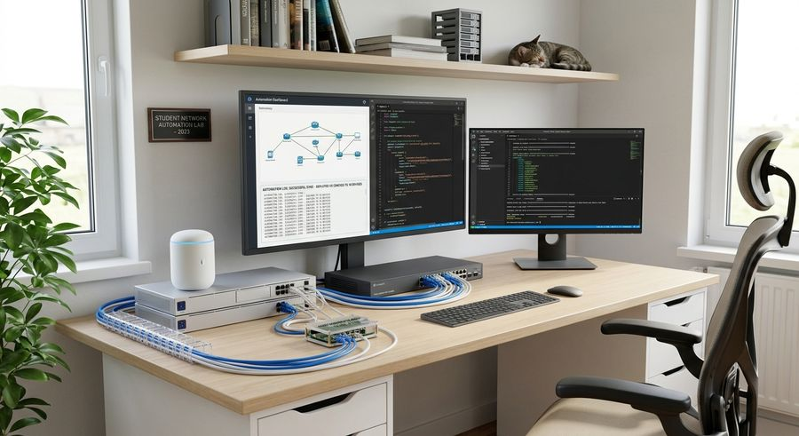

Thuisnetwerk VLAN's
Gescheiden netwerksegmenten voor gasten en werk apparatuur.
Bekijk details →
Gescheiden netwerksegmenten voor gasten en werk apparatuur.
Bekijk details →
Geautomatiseerde nachtelijke backups via rsync op Linux.
Bekijk details →
Draadloze uitbreiding tot op zolder met extra Access Points.
Bekijk details →
Live verkeersanalyse en dashboarding via Grafana.
Bekijk details →Eerste stappen in cybersecurity en netwerkbeveiliging.
Bekijk details →
Automatiseringsscripts om taken sneller uit te voeren.
Bekijk details →